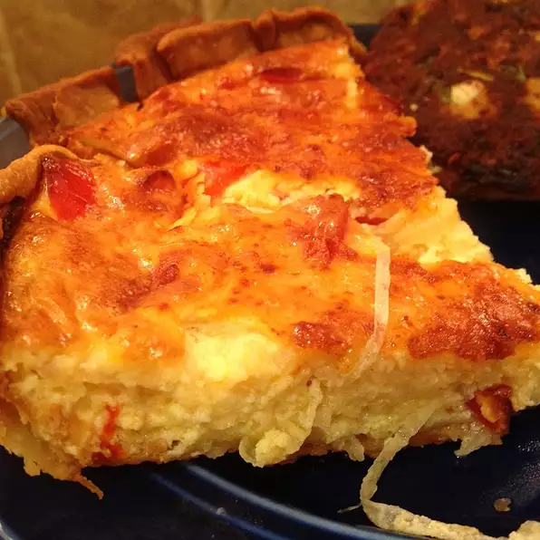

Vidalia Onion Pie

Description
A light dinner of Vidalia onion pie, a nice salad on the side, and a ice cold glass of homemade lemonade is perfect for hot summer nights! Optional additions can be sweet red pepper to the onions as they cook and/or crumbled bacon or fresh ham bits may be added to the mixture prior to baking. All versions are great! If desired, a couple Vidalia onion rings look great on the top of the pie for decoration!
Ingredients
- 6 Vidalia onions, thinly sliced
- 4 eggs, beaten
- 1 cup sour cream
- salt and pepper to taste
- ½ cup unsalted butter
- ¼ cup grated Parmesan cheese
- 1 pinch paprika
- 2 tablespoons hot sauce
- 2 (9 inch) pie shells, baked
- ½ cup grated Parmesan cheese for topping
Directions
- Preheat oven to 375 degrees F (190 degrees C).
- In a medium skillet, cook onions in butter for about 10 minutes, or until clear and soft; stir often. Reserve juices.
- In a large bowl, mix onions with eggs and sour cream. Stir in onion juices, butter and cheese. Add salt and pepper and hot sauce to taste. Make sure all ingredients are well blended and then pour into the 2 pie shells.
- Sprinkle grated cheese and paprika on top of pies. Bake in preheated oven for 20 minutes. Lower temperature to 350 degrees F (175 degrees C) and bake for an additional 30 to 40 minutes, or until lightly browned on top. Let cool for a few minutes to settle before slicing.
Home